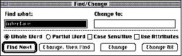
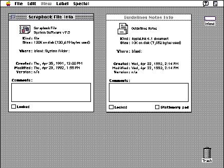

Modeless Dialog BoxesA modeless dialog box looks like a window without a size box, zoom box, or scroll bars. The user can move a modeless dialog box, make it inactive and active again, and close it like any document window. Modeless dialog boxes provide the most flexibility for your users. They preserve user control so that the user can do any task at any time or in any order. They don't interrupt people's workflow by locking out all other actions. With modeless dialog boxes, people can change things in their documents, perform actions with the data in their documents, or get information about their documents or applications.Modeless dialog boxes allow people to repeat an action as many times as necessary while the dialog box remains open--that is, the dialog box doesn't close and need to be reopened each time they want to repeat an action. This feature is useful for tasks such as finding and replacing text in a word processor or numbers in a spreadsheet. Use a modeless dialog box instead of a movable modal dialog box whenever possible so that you can preserve the user's ability to perform tasks in any order. Figure 6-2 shows a typical modeless dialog box. Figure 6-2 A typical modeless dialog box  Because modeless dialog boxes are movable, people can place them out of the way of the current point of interest in their documents. People can also keep modeless dialog boxes open and available. This option might be useful if a person wants to compare information about several documents, which is possible with Info windows in the Finder. Figure 6-3 shows two such windows on a desktop. Figure 6-3 Two open modeless dialog boxes  When your application displays a modeless dialog box, it should preset any controls to some logical values. Also, whenever possible, your application should supply appropriate text in any text entry fields; users can verify the information rather than generate it from scratch. In any case, display a selection or an insertion point in one of the text entry fields (usually the "first" field) when you display the dialog box. Subtopics |